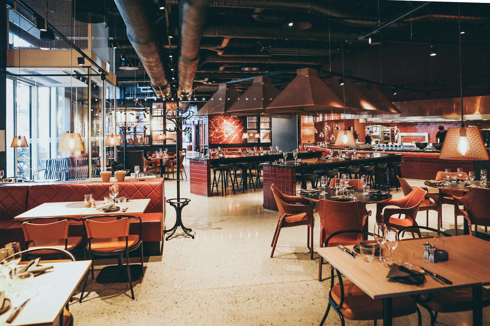

Resy integration
A warm, on-brand voice that answers every call, books and edits Resy reservations live, and texts guests the menu — during the rush, after close, and everywhere in between.
Why Resy restaurants choose it
Your Resy book fills online — but the phone is where same-night covers and party adjustments happen.
New reservations, party-size changes, and cancellations all land in Resy in real time — no double-entry.
Overnight and holiday calls become morning reservations instead of morning voicemails.
English and Spanish, switching mid-call when the guest switches — perfect for urban Resy neighborhoods.
The experience
Voice AI only works if callers stay on the line. TableTalk's voices use natural pacing, understand accents, and know your menu and house rules cold.
Yes. Phone reservations, modifications, and cancellations are handled in real time inside your Resy account, with SMS confirmation to the guest.
That's one of its best jobs. The AI answers overnight, on holidays, and during the dinner rush — booking tables into Resy whenever your host can't be at the phone.
TableTalk's voices are warm and natural with realistic pauses, and it's trained on your menu and house rules — most callers assume they reached your best host.
Flat $50/month. Unlimited calls. Live in 5 minutes.
Start your free trial